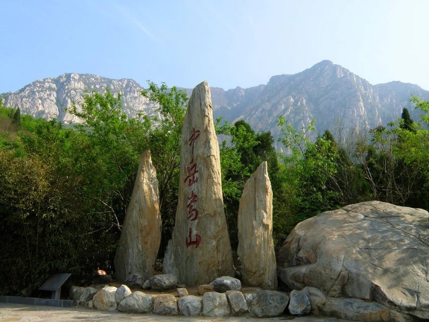
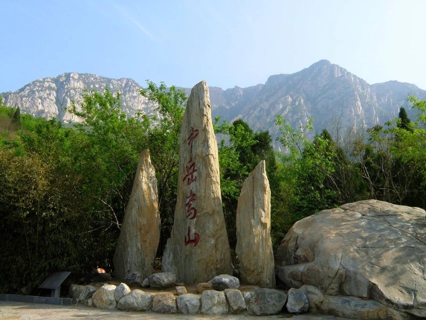
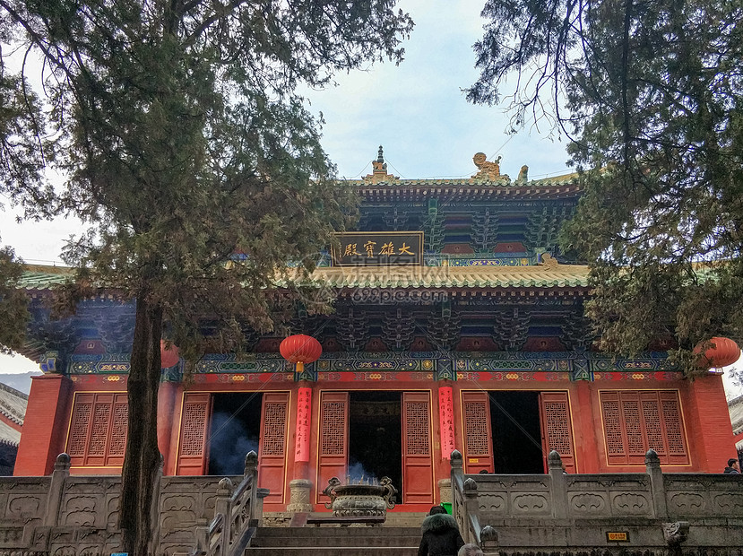
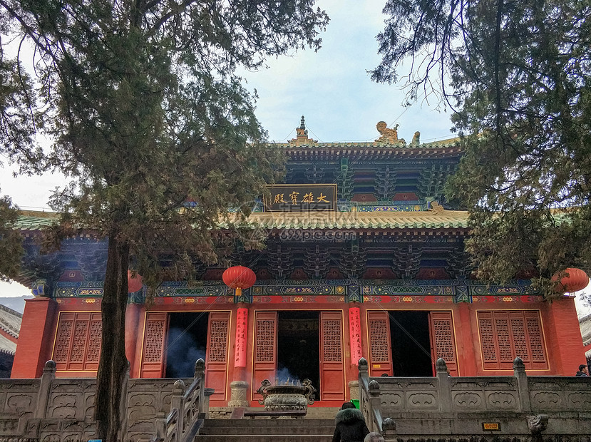
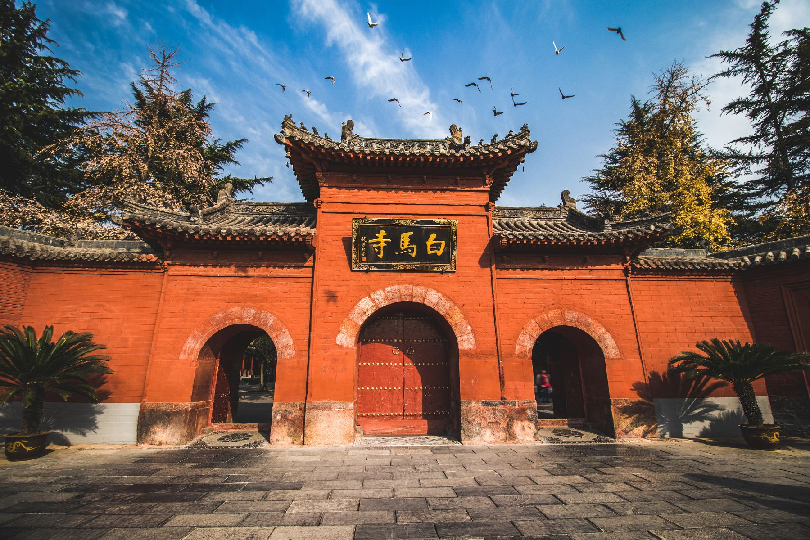
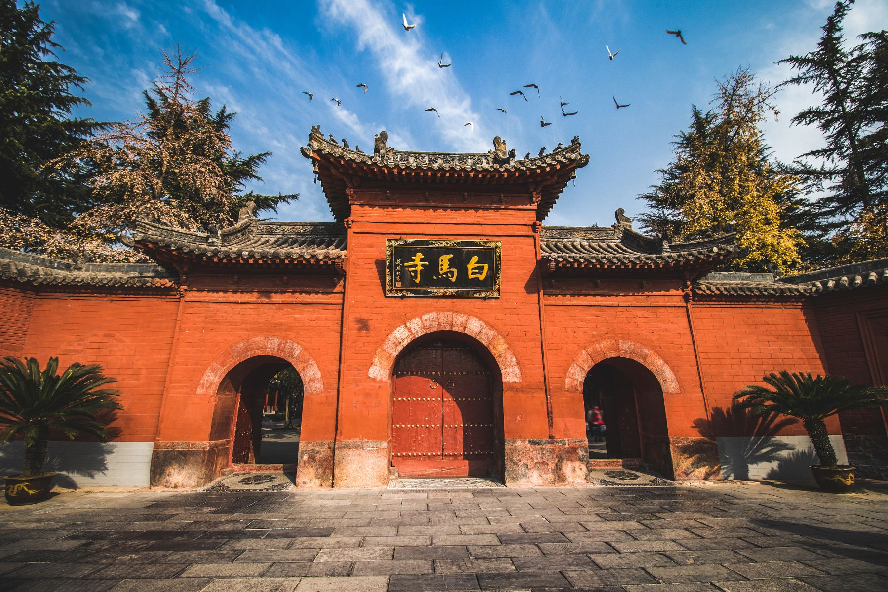
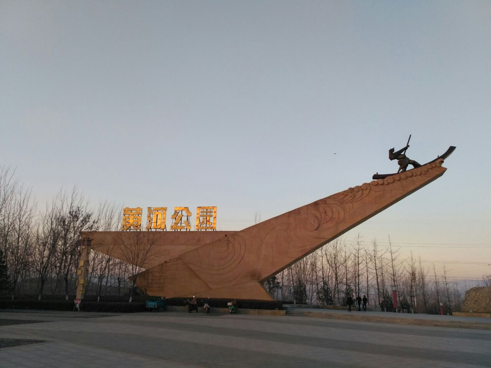
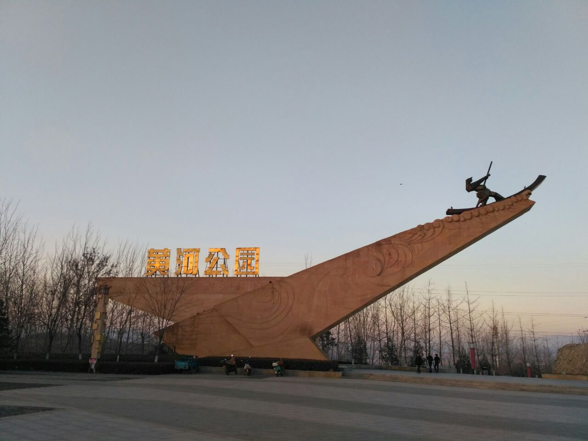

中岳嵩山
 

嵩山，古名为外方、嵩高、崇高，位于河南省西部，属伏牛山系，地处登封市西北面，是五岳的中岳。总面积约为450平方公里，由太室山与少室山组成，最高峰连天峰1512米；东西绵延60多公里；东依省会郑州，西临古都洛阳，南依颍水，北邻黄河。嵩山地处中原，东西横卧，古称“外方”，夏商时称“嵩高”、“崇山”，西周时称天室山。公元前770年平王迁都洛阳后，以“嵩为中央、左岱、右华”，为“天地之中”，称中岳嵩山。嵩山又分为少室山和太室山两部分，共72峰。海拔最低为350米，最高处为1512米。主峰峻极峰位于太室山，高1491.7米；最高峰连天峰位于少室山，高1512米。嵩山北瞰黄河、洛水，南临颍水、箕山，东接五代京都汴梁，西连十三朝古都洛阳，素有“汴洛两京、畿内名山”之称。
嵩山特产：石花茶、板栗、大枣、猴头菇、猕猴桃、嵩山人参果
嵩山少林寺
 

天下功夫出少林，少林功夫甲天下。
少林寺，是中国佛教禅宗祖庭和中国功夫的发源地，现为世界文化遗产、全国重点文物保护单位、国家5A级旅游景区，位于河南省郑州市登封市嵩山五乳峰下，因坐落于嵩山腹地少室山茂密丛林之中，故名“少林寺”。少林寺是世界著名的佛教寺院，是汉传佛教的禅宗祖庭，在中国佛教史上占有重要地位，被誉为“天下第一名刹”。因其历代少林武僧潜心研创和不断发展的少林功夫而名扬天下，素有“天下功夫出少林，少林功夫甲天下”之说。2010年8月，包括少林寺常住院、初祖庵、塔林在内的天地之中历史建筑群被联合国科教文组织列为世界文化遗产。
洛阳龙门石窟


“若问古今兴废事，请君只看洛阳城”，“千年帝都”洛阳几经兴衰，最盛时当属隋唐时期。龙门石窟，这座雕刻在石头上的千古绝唱，便是盛唐气象的最佳见证。学者余秋雨先生，曾这样评价龙门石窟：唐代是一个伟大的时代，而龙门石窟就是刻在石头上的唐朝。
龙门石窟始建于北魏孝文帝年间，盛于唐时，终于清末，是历史上开凿累计时间最长的石窟，与莫高窟、云冈石窟并称“中国三大石窟”。在龙门石窟数以千计的像龛中唐代营造的约占60%。奉先寺，是龙门石窟唐代最具代表性的石窟。崖壁上的九尊雕像，不仅展现了古代工匠们精湛的石雕技艺，更彰显了盛唐强大的国力。当我们立于佛前，静静凝望，似乎可以想见大唐盛世繁华。龙门石窟不仅有精美的石窟造像，丰富的碑刻书法，更通过文学、音乐、人文、宗教建筑、医学等众多形态展现艺术之美，成为“中国最大的露天石刻艺术博物馆“。
白马寺
 

在河南洛阳老城东约12公里的地方，有一座已经存在了1900多年的古寺，这就是中国官办佛教寺院的第一寺——白马寺。
白马寺的山门为三滴水样式，辟有三个拱圈式门洞。山门内东西两侧靠近围墙的地方，各有一座圆形墓冢，分别埋葬着摄摩腾和竺法兰两位印度高僧。这两位高僧在白马寺译经传教多年，共同翻译出了中国最早的汉文佛经《四十二章经》，并最终圆寂在中国。在佛教进入中国的最初两百年，每一个与佛教有关的重大事件都与白马寺有关，白马寺是当之无愧的中国佛教第一寺。除此之外，白马寺有四大主殿：天王殿、大佛殿、大雄殿和接引殿。其中天王殿是白马寺的第一重大殿，面阔五间，单檐歇山顶，内中供奉的明代干漆夹苎弥勒像非常珍贵。干漆夹苎是一种以漆器工艺为基础的中国传统工艺，主要用于宗教造像，目前此工艺已近乎失传。
白马寺是中国佛教的开山之寺，其1900多年的历史就是一部浓缩了的中国佛教史。
三门峡
 

儿时，如果你到过北京天安门，爬过长城，走过南京长江大桥都足以在小伙伴面前炫耀。儿时无法实现的愿望，长大后还是念念不忘，被誉为“万里黄河第一坝”的三门峡大坝也是那个时代留下的记忆。那个年代，三门峡大坝可以说无人不知，无人不晓，它出现在各种宣传画和商标图案中。
三门峡位于河南西部边缘，河南、陕西、山西三省交界处。相传在大禹治水时，用神斧在这里劈成“人门”、“神门”、“鬼门”三道峡谷，由此得来三门峡之名。三门峡是中华民族的发祥地之一，早在五六十万年前，这里就有华夏祖先生息的痕迹。夏、商及西周时期的虢国都把这里当作统治的中心区域。至今还留有仰韶文化遗址、虢国车马坑群、秦赵会盟台、函谷关、宝轮寺等名胜古迹。函谷关、黄河公园、仰韶文化博物馆等等，随便一处，三门峡深厚的历史文化底蕴可见一斑。